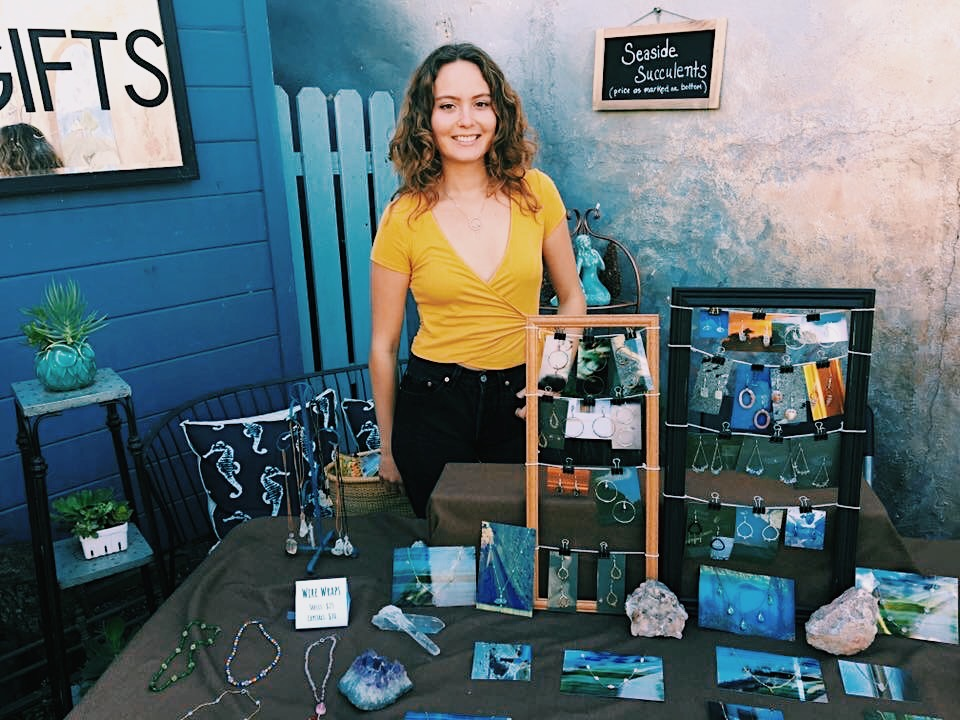
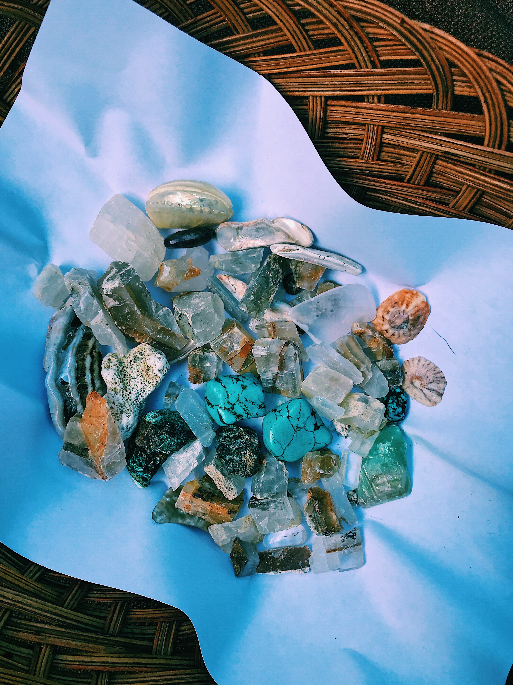
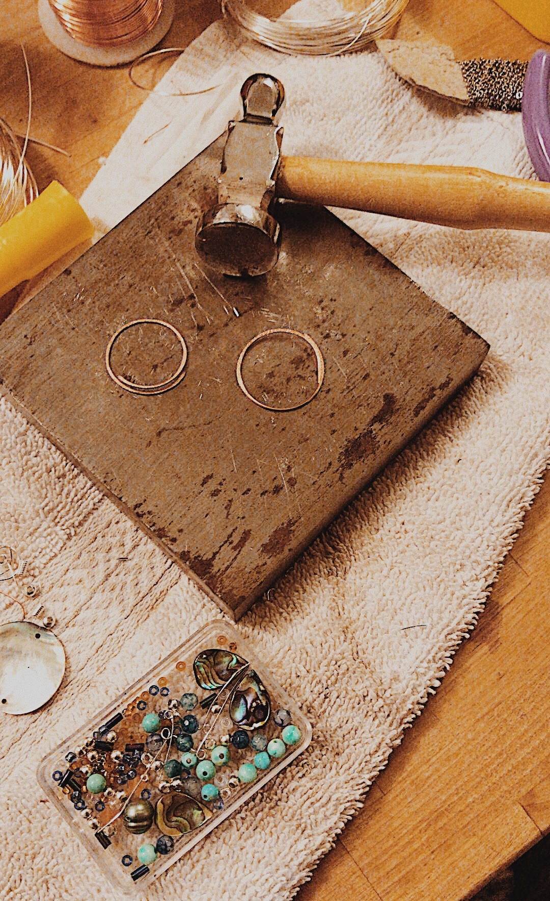

Jennica Norton selling jewelry at her first market in Dec. 2018 in Carpinteria, CA.
Using what nature naturally provides,
I like to create beautiful things out of local materials,
found items, or other Earthly objects.

The process of creating is therapeutic.
I often choose to work with materials that are tangible, found in nature, and tactile.

I am a traveler, adventurer, and explorer. I come from a place where mountains meet the ocean.
My life revolved around sunshine and saltwater until I moved away from the coast to the inland mountains.
In the moments between adventuring in the outdoors, I like to engage in the cathartic process of making art
that reflects how those experiences have shaped me. During my exploration of the natural world, I find
the act of collecting beautiful objects to make art healing. By transforming these items into my artwork,
I find myself transformed along with them.
My passion for the outdoors and creating inspires me to keep trying new ways of approaching my craft.